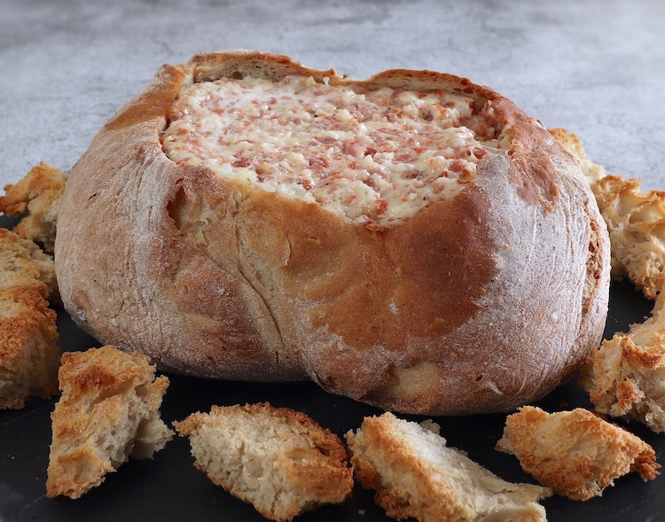

Stuffed bread with chorizo

Description
This specific appetizer is very traditional in the south of Portugal.
Get some rustic-style bread, remove the inside and stuff it with chorizo
and cheese. For maximum taste, it is recommended to use "pão alentejano"!
Ingredients
- Alentejo-style bread (pão alentejano)
- Portuguese chorizo (red chorizo)
- Mayonnaise
- Grated mozzarella cheese
- Oregano
- Garlic
Steps
- Peel the skin off of the chouriço and cut the chouriço into pieces. Place the chouriço, the peeled garlic and the oregano in a food processor and pulse until well chopped.
- Place the chouriço mixture in a bowl, add the grated cheese and the mayonnaise and mix well with a spoon.
- Cut off the top of the bread with a knife and remove the inside (reserve the bread crumb).
- Place the filling inside the bread and cover with the lid. Place the bread and the bread crumb on a baking pan
- Bake for 20 to 25 minutes. Remove the bread from the oven and serve hot.